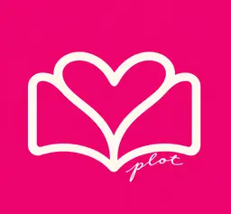
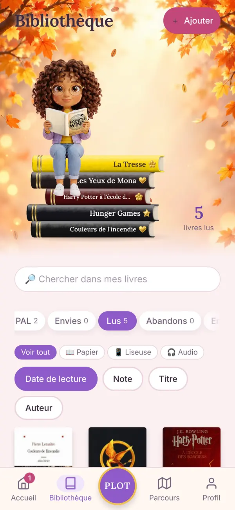
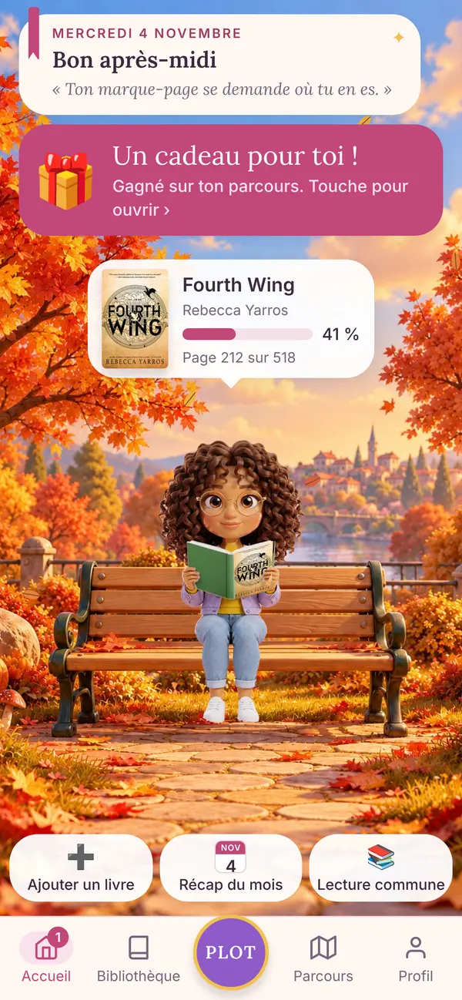
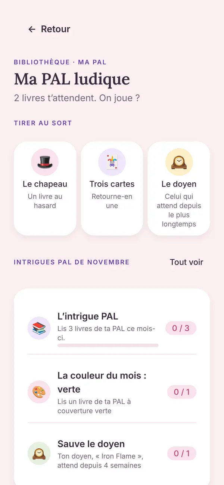
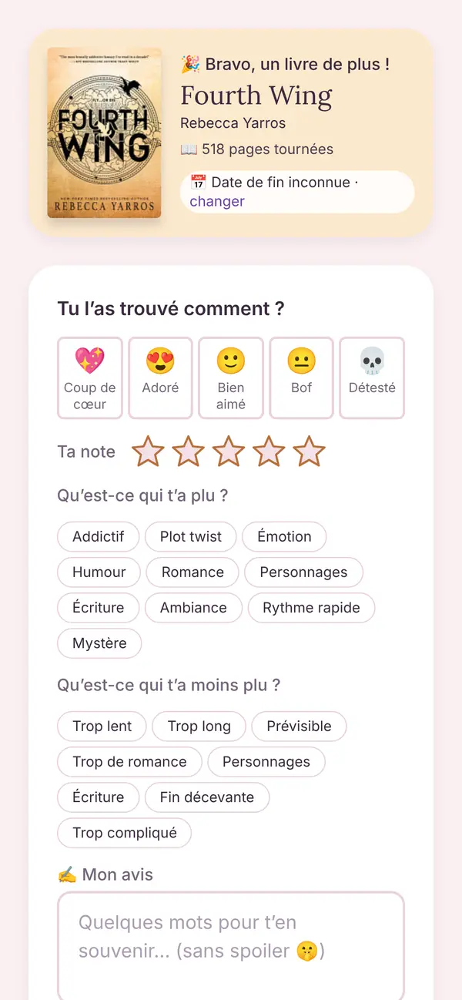
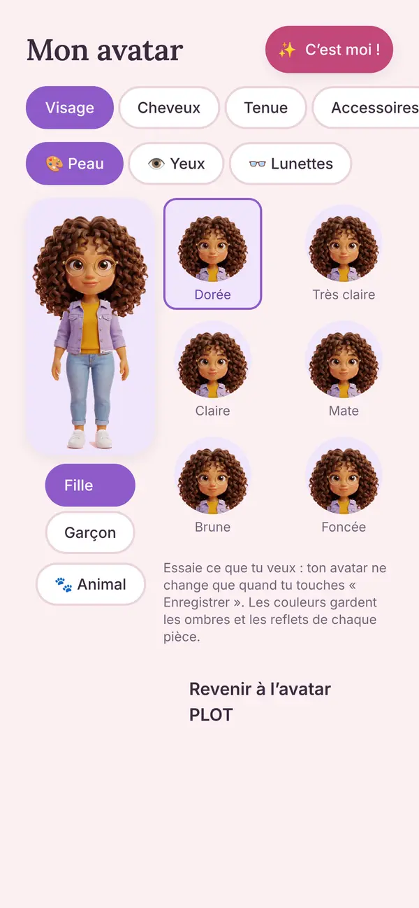

Accueil
Ton coin lecture
Ton avatar t’attend sur son banc, avec le livre que tu lis. Touche-le pour noter ta page du jour, lancer le chrono, et voir où tu en es.

PLOTPLOT garde ta bibliothèque, ta PAL et tes avis, t’aide à choisir ta prochaine lecture et te fait lire à plusieurs.
Gratuit · sans publicité · tes données t’appartiennent


Ton avatar t’attend sur son banc, avec le livre que tu lis. Touche-le pour noter ta page du jour, lancer le chrono, et voir où tu en es.
Scanne le code-barres ou cherche le titre : chaque livre arrive avec sa couverture et son nombre de pages. Range-les en PAL, En cours, Lus, Envies, Abandons.

Tu ne sais pas quoi lire ? Tire un livre au hasard, retourne trois cartes ou laisse parler le doyen de ta pile. Et chaque mois, de nouvelles intrigues à relever.

Coup de cœur, adoré, bof… Note ce que tu as aimé et ce qui t’a moins plu. PLOT apprend tes goûts et t’explique toujours pourquoi il te propose un livre.

Peau, cheveux, yeux, tenues, lunettes, et même un petit animal. Avance sur ton parcours de lecteur et gagne des cadeaux pour l’habiller.
Lectures communes étape par étape, sans spoiler. Profils de lecteurs, amies, défi du mois… et des nouveautés chaque semaine.
PLOT est un carnet de lecture. Cette page dit quelles données PLOT utilise, pourquoi, qui les voit, combien de temps elles sont gardées et comment exercer tes droits.
Elisabeth TARDY, éditrice de PLOT, est responsable du traitement. Pour toute question ou demande : elisabookstok@gmail.com.
Tu peux utiliser PLOT sans compte. Ta bibliothèque, ta PAL, ton journal de lecture, tes notes, ton avatar et tes réglages restent alors seulement sur ton téléphone. PLOT ne les reçoit pas.
Pour trouver un livre, ton téléphone interroge directement des catalogues de livres (Google Books, Open Library, BnF, Sudoc, leslibraires.fr) avec le titre ou l’ISBN que tu cherches. Ces services reçoivent ta recherche et ton adresse IP, selon leurs propres règles.
Les mises à jour de l’app passent par Expo, qui reçoit l’adresse IP et le type de téléphone.
Ton adresse e-mail (ou ton compte Google ou Apple) sert à te connecter. Le code de connexion t’est envoyé par e-mail via Brevo.
Pour éviter que des robots créent des comptes ou demandent des codes en masse, une petite vérification anti-robot (Cloudflare Turnstile) peut s’afficher avant l’envoi du code. Cloudflare reçoit alors ton adresse IP et des informations techniques sur ton téléphone, seulement pour vérifier que tu n’es pas un robot. Base légale : l’intérêt légitime de PLOT à protéger le service.
Ta date de naissance (mois et année seulement) sert à vérifier que tu as l’âge d’avoir un compte. Elle n’est montrée à personne.
Une copie de ta bibliothèque, de ton étagère, de ton avatar et de tes choix PLOT MATCH est gardée sur ton compte, pour la retrouver sur un autre téléphone. Tes notes et pensées restent privées.
Base légale : l’exécution du service que tu demandes en créant un compte (article 6.1.b du RGPD).
Ton nom de lecteur et ton avatar : quand quelqu’un cherche ton nom, dans les lectures communes, à côté de tes avis partagés et chez tes amies. Dans Profil › Mon compte, « Me cacher » fait que personne ne te trouve en cherchant ton nom ; tes amies peuvent toujours t’ajouter avec ton nom exact.
Tes avis, seulement si tu as touché « Partager avec les lecteurs ». Sinon ils restent privés.
Tes messages de lecture commune, seulement aux membres de cette lecture commune.
Tes amies voient tes livres en cours, tes derniers lus avec leur note et ta PAL. Jamais tes notes, ni ton e-mail.
Profil visible : les lecteurs connectés à PLOT peuvent ouvrir ton profil (avatar, nom de lecteur, niveau, livres en cours, derniers lus avec leurs étoiles, PAL). Avec « Passer en profil privé », seules tes amies voient tes livres ; les autres ne voient que ton avatar, ton nom de lecteur et ton niveau.
Une lecture commune publique montre à tous les lecteurs connectés son nom, son livre, le nom de lecteur et l’avatar de la personne qui l’organise, et le nombre de membres. Chacun peut demander à la rejoindre.
Pour faire vivre PLOT, l’équipe voit un tableau de bord avec, pour chaque compte : le nom de lecteur, l’avatar, la date d’inscription, la dernière visite et des nombres (livres, avis, lectures communes, messages, amies, signalements). Jamais les titres de tes livres, tes notes ni le texte de tes messages.
L’équipe lit aussi les avis que tu partages avec tous, les retours que tu lui envoies et les contenus qu’on lui signale. Base légale : l’intérêt légitime de PLOT à faire fonctionner et sécuriser le service.
La copie de ton compte est sur un serveur protégé. L’équipe ne consulte jamais ta bibliothèque ni tes notes, sauf à ta demande ou si la loi l’exige.
Seulement si tu dis oui : PLOT compte tes gestes dans l’app (un livre ajouté, une page notée), jamais un titre ni ce que tu écris. Base légale : ton consentement, que tu peux retirer à tout moment dans Profil › Mon compte.
Quand l’app plante, PLOT reçoit un petit rapport : l’écran concerné, le message d’erreur, la version de l’app, le type de téléphone et un numéro tiré au hasard à l’installation. Jamais ton nom, ton e-mail ni tes livres. Ça sert seulement à réparer les bugs. Base légale : l’intérêt légitime de PLOT à faire fonctionner l’app.
Quand tu signales un contenu, PLOT garde le contenu signalé, le motif et ton message, pour le traiter. La personne signalée ne sait pas qui l’a signalée.
Base légale : l’intérêt légitime de PLOT à protéger ses lecteurs, et les obligations légales des services qui hébergent des contenus.
Les rappels sont créés sur ton téléphone, seulement si tu les actives. Ils peuvent afficher le titre de ton livre ou le nom de ta lecture commune sur l’écran verrouillé, sauf si tu choisis « Masquer les titres ».
Les notifications (demandes pour rejoindre ta lecture commune, messages de lecture commune, amies, nouveautés PLOT) ne sont envoyées que si tu les autorises sur ton téléphone. PLOT garde alors un identifiant de notification lié à ton compte. Les notifications passent par Expo, puis par Apple (iPhone) ou Google (Android). Tu choisis lesquelles tu reçois dans Profil, et tu peux toutes les couper dans les réglages du téléphone. L’identifiant est effacé quand tu te déconnectes ou supprimes ton compte. Base légale : l’exécution du service que tu as demandé.
Le widget de l’écran d’accueil affiche ton livre en cours et ton chrono. Ces informations restent sur ton téléphone.
La caméra sert seulement à lire le code-barres d’un livre. Aucune image n’est gardée.
Les boutons « Acheter » et Nextory ouvrent le site du marchand ou du service dans ton navigateur. PLOT ne leur envoie aucune donnée sur toi : seulement le livre cherché, dans le lien. PLOT compte le nombre de clics sur ces boutons, sans savoir qui a cliqué. Ce site applique ensuite ses propres règles de confidentialité et peut déposer ses cookies.
Personne ne les achète : PLOT ne vend aucune donnée et n’affiche aucune publicité.
Les prestataires techniques de PLOT : Supabase (comptes et base de données, hébergés à Francfort, Allemagne), Brevo (envoi des e-mails de connexion), Cloudflare (vérification anti-robot), Google (si tu te connectes avec Google, et notifications sur Android), Apple (si tu te connectes avec Apple, et notifications sur iPhone), Expo (mises à jour de l’app et envoi des notifications), GitHub (copies de sécurité chiffrées). Certains de ces prestataires sont des sociétés américaines : les transferts éventuels hors de l’Union européenne sont encadrés par les garanties prévues par le RGPD.
Ton compte et ce qu’il contient : jusqu’à ce que tu le supprimes.
Les statistiques d’usage : 13 mois au plus.
Les signalements : 1 an après leur traitement.
Les copies de sécurité de la base, chiffrées : 30 jours. Elles sont faites chaque nuit et gardées chez GitHub, pour pouvoir tout retrouver après une panne. Supabase garde aussi ses propres copies pendant 7 jours.
Les rapports de plantage : 6 mois.
L’identifiant de notification : jusqu’à ta déconnexion, ou 13 mois sans ouvrir PLOT.
Tes retours sur l’app (« Donner mon avis sur PLOT ») : 2 ans, détachés de ton compte s’il est supprimé.
Dans Profil › Mon compte › Supprimer mon compte. Ton compte et tout ce qui y est lié sont effacés : avis partagés, messages, amitiés, invitations. Une lecture commune que tu organisais continue pour ses membres : la personne arrivée la première en devient l’organisatrice. Si tu y étais seule, elle est supprimée. Tes livres restent sur ton téléphone.
Tu peux demander à accéder à tes données, les corriger, les effacer, en recevoir une copie, limiter leur utilisation ou t’y opposer, en écrivant à elisabookstok@gmail.com. Profil › Sauvegarde te donne déjà un fichier avec ta bibliothèque et, avec un compte, tes avis partagés, tes messages de lectures communes et tes amies.
Si tu n’es pas satisfaite de la réponse, tu peux saisir la CNIL (www.cnil.fr).
Un compte PLOT est réservé aux lecteurs de 15 ans et plus. PLOT demande ta date de naissance (mois et année) à la création du compte ; si tu as moins de 15 ans, le compte n’est pas créé et tu peux utiliser PLOT sans compte, sur ton téléphone seulement.
En utilisant PLOT, tu acceptes ces règles. Elles servent à ce que chacun lise et échange en paix.
PLOT est un carnet de lecture gratuit : suivre ses livres, garder ses notes, choisir sa prochaine lecture, lire à plusieurs. PLOT peut évoluer, ajouter ou retirer des fonctions.
Il faut avoir 15 ans ou plus pour créer un compte. Ta date de naissance doit être exacte.
Ton nom de lecteur est choisi une fois pour toutes. Il ne doit pas imiter une autre personne ni être injurieux.
Tu es responsable de ce qui est publié depuis ton compte. Tu peux le supprimer à tout moment dans Profil.
Pas d’insulte, de harcèlement, de propos haineux ou discriminatoires, de menaces, de contenu sexuel ou violent, de publicité ni d’arnaque.
Pas de spoiler sans prévenir dans les avis. Dans les lectures communes, reste à l’étape où tu en es.
Respecte la vie privée : ne publie pas les informations personnelles de quelqu’un d’autre.
Les citations doivent rester courtes et mentionner le livre.
Tu peux signaler un message, un avis ou un profil, et bloquer quelqu’un, depuis le contenu concerné. Certains mots sont refusés automatiquement.
L’équipe PLOT lit chaque signalement et peut supprimer un contenu ou un nom contraire à ces règles ou à la loi. En cas de manquement grave ou répété, le compte peut être supprimé. Pour contester une décision : elisabookstok@gmail.com.
Tes avis, notes et messages restent à toi. En partageant un avis ou en écrivant dans une lecture commune, tu autorises PLOT à l’afficher aux autres lecteurs concernés, tant qu’il est en ligne.
Les fiches et couvertures des livres viennent de catalogues publics et de libraires (Google Books, Open Library, BnF, Sudoc, leslibraires.fr). Elles appartiennent à leurs auteurs, éditeurs et à ces services. PLOT les affiche pour t’aider à reconnaître tes livres.
Sur la fiche d’un livre de ta PAL ou de tes envies, PLOT propose des liens pour l’acheter (Fnac et Amazon) ou l’écouter avec Nextory. Ce sont des liens partenaires (affiliés) : si tu achètes ou t’abonnes par ce lien, PLOT peut toucher une commission, sans aucun frais pour toi.
Ces liens ne changent pas les suggestions de PLOT MATCH, qui ne dépendent que de tes goûts. La vente se fait entre toi et le marchand, selon ses conditions.
PLOT fait de son mieux pour que l’app fonctionne et que tes données soient protégées, sans pouvoir garantir l’absence de panne. Pense à faire une sauvegarde depuis Profil.
PLOT n’est pas responsable des contenus publiés par les lecteurs, mais agit dès qu’un contenu illicite lui est signalé.
Ces conditions sont soumises au droit français. En cas de désaccord, écris d’abord à PLOT pour trouver une solution amiable.
Ces conditions peuvent changer : la date de mise à jour est indiquée en haut, et un changement important te sera signalé dans l’app.
Qui édite et héberge PLOT.
Elisabeth TARDY, entrepreneuse individuelle (micro-entreprise), SIREN 104 081 344. Contact : elisabookstok@gmail.com.
Comptes et base de données : Supabase Pte. Ltd., 65 Chulia Street #38-02/03, OCBC Centre, Singapour 049513 (supabase.com). Les données sont hébergées par Amazon Web Services à Francfort (Allemagne).
Mises à jour de l’application : Expo (650 Industries, Inc., expo.dev).
PLOT contient des liens affiliés (Fnac, Amazon, Nextory) : l’éditrice peut percevoir une commission sur les achats ou abonnements faits par ces liens, sans surcoût pour l’utilisateur.
Le nom PLOT, son design, ses illustrations et son code appartiennent à son éditrice. Les fiches et couvertures de livres appartiennent à leurs ayants droit.
Une question, une demande sur tes données ? Écris à elisabookstok@gmail.com.